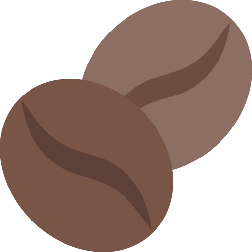
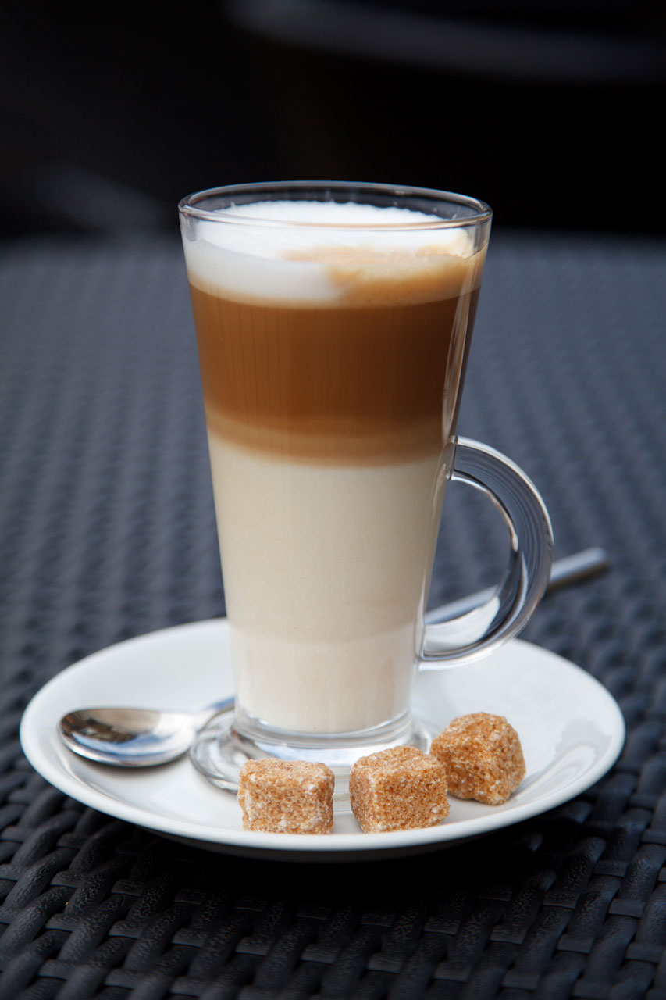
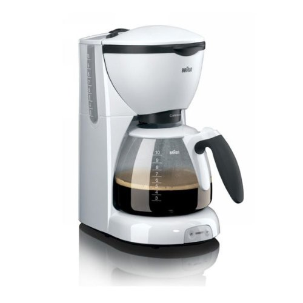
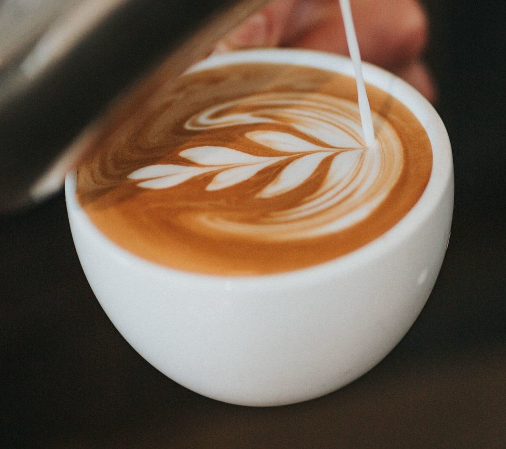

(turku: kahve; arābu:
قهوة, qahwa) ir karsts
dzēriens, kas tiek gatavots no grauzdētām kafijkoku
(Coffea) sēklām, kafijas pupiņām.
Tas parasti ir populārs dzēriens brokastīs vai "kafijas pārtraukumos"
darbā. Tā satur no viena līdz diviem procentiem kofeīna, kas stimulē centrālo nervu sistēmu.
Lielākās valstis pēc ievāktā kafijpupiņu daudzuma 2017. gadā (tonnas).
- Brazīlija 2,680,515
- Vjetnama 1,542,398
- Kolumbija 754,376
- Indonēzija 668,677
- Pasaulē 9,212,169
100 g produkta satur:
- Ogļhidrāti 0
- Tauki 0,02 g
- Olbaltumvielas 0,12 g
- Ūdens 99,39 g
- Kālijs 49 mg
- Fosfors 3 mg
- Magnijs 3 mg
- Kalcijs 2 mg
- Sāls 2 mg
Avots
Populāri kafijas pagatavošanas veidi:
  Iespējamie ieguvumi lietojot kafiju
Atsevišķi zinātnieki, balstoties uz veiktajiem pētījumiem, ir pārliecināti, ka, izdzerot 3– 4 kafijas tases dienā, uz pusi samazinās risks saslimt ar aknu un mutes vēzi. Tāpat tiek uzsvērts, ka kofeīnam ir pozitīva ietekme uz smadzeņu darbību un atmiņu – 200 mg kofeīna dienā uzlabo ilgtermiņa atmiņu.
Iespējamie negatīvie efekti
Pierādīts, ka, patērējot vairāk nekā 500–600 mg kofeīna dienā, rodas bezmiegs, nervozitāte, aizkaitinājums, gremošanas traucējumi un paātrināta sirdsdarbība. No organisma kofeīns izdalās kopā ar lielu daudzumu šķidruma, tādējādi tā pastiprināta lietošana var novest pie dehidrācijas.